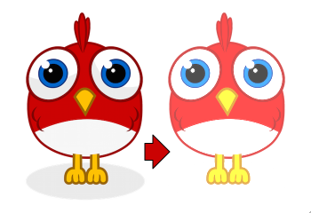
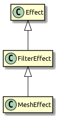

Custom Styles
Now that we have tapped the raw power of Stage3D, let’s continue on this road! In this section, we will write a simple mesh style. In Starling 2, all rendering is done through styles; by creating your own style, you can create special effects without sacrificing performance in any way.
| Before you continue, please make sure you have read through the section Custom Filters, as well. Filters and styles share many concepts, so it makes sense to start with the simpler of the two. Below, I’ll assume that you are familiar with everything that’s shown in that other section. |
The Goal
The goal is just the same as the one we were shooting for with the ColorOffsetFilter; we want to allow adding an offset to the color value of every rendered pixel. Only this time, we’re doing it with style! We’ll call it … ColorOffsetStyle.
Figure 1. Applying a color offset with style.
Before we continue, it’s crucial that you understand the difference between a filter and a style.
Filters vs. Styles
As mentioned before, a filter works on a per-pixel-level: the object is rendered into a texture, and the filter processes that texture in some way. A style, on the other hand, has access to all the original geometry of the object, or to be more precise: to the object’s vertices.
While that limits styles in some ways (e.g. you can’t achieve a blur effect with a style), it makes them much more efficient. First, because you don’t need that first step of drawing the object into a texture. Second, and most importantly: this allows styled meshes to be batched.
As you know, keeping the number of draw calls down is very important for a high frame rate. To make sure that happens, Starling batches as many objects together as possible before drawing them. Question is, how to decide which objects may be batched together? This is where the style comes into play: only objects with the same style can be batched together.
If you add three images to the stage that have a ColorOffsetFilter applied to them, you’ll see at least three draw calls. Add three objects with a ColorOffsetStyle instead, and you’ll have just one. That makes styles a little more difficult to write — but that’s also what makes it worth the effort!
Extending MeshStyle
The base class for all styles is starling.styles.MeshStyle.
This class provides all the infrastructure we need. Let’s look at a stub first:
class ColorOffsetStyle extends MeshStyle
{
public static final VERTEX_FORMAT:VertexDataFormat =
MeshStyle.VERTEX_FORMAT.extend("offset:float4");
private var _offsets:Array<Float>;
public function new(
redOffset:Float=0.0, greenOffset:Float=0.0,
blueOffset:Float=0.0, alphaOffset:Float=0.0)
{
super();
_offsets = [];
_offsets.resize(4);
setTo(redOffset, greenOffset, blueOffset, alphaOffset);
}
public function setTo(
redOffset:Float=0.0, greenOffset:Float=0.0,
blueOffset:Float=0.0, alphaOffset:Float=0.0):Void
{
_offsets[0] = redOffset;
_offsets[1] = greenOffset;
_offsets[2] = blueOffset;
_offsets[3] = alphaOffset;
updateVertices();
}
override public function copyFrom(meshStyle:MeshStyle):Void
{
// TODO
}
override public function createEffect():MeshEffect
{
return new ColorOffsetEffect();
}
override private function onTargetAssigned(target:Mesh):Void
{
updateVertices();
}
override private function get_vertexFormat():VertexDataFormat
{
return VERTEX_FORMAT;
}
private function updateVertices():Void
{
// TODO
}
public var redOffset(get, set):Float;
private function get_redOffset():Float { return _offsets[0]; }
private function set_redOffset(value:Float):Float
{
_offsets[0] = value;
updateVertices();
return value;
}
// the other offset properties need to be implemented accordingly.
public var greenOffset(get, set):Float;
public var blueOffset(get, set):Float;
public var alphaOffset(get, set):Float;
}That’s our starting point. You’ll see that there’s already going on a little more than in our initial filter class from the last example. So let’s have a look at the individual parts of that code.
Vertex Formats
The first thing that’s notable is the vertex format constant at the very top of the class. I mentioned already that styles work on a vertex level, giving you access to all the geometry of an object. The VertexData class stores that geometry, but we never actually discussed how that class knows which data is stored in this class, and how. That’s defined by the VertexDataFormat.
The default format used by MeshStyle is the following:
position:float2, texCoords:float2, color:bytes4
The syntax of this string should seem familiar; it’s a list of attributes with certain data types.
-
The
positionattribute stores two floats (for the x- and y-coordinates of a vertex). -
The
texCoordsattribute stores two floats, as well (for the texture coordinates of the vertex). -
The
colorattribute stores four bytes for the color of the vertex (one byte for each channel).
A VertexData instance with this format will store those attributes for each vertex of the mesh, using the exact same order as in the format string. This means that each vertex will take up 20 bytes (8 + 8 + 4).
When you create a mesh and don’t assign any style in particular, it will be rendered by the standard MeshStyle, forcing exactly this format onto its vertices. That’s all the information you need to draw a textured, colored mesh, after all.
But for our ColorOffsetStyle, that’s not enough: we need to store our color offset as well.
Thus, we need to define a new format that adds an offset attribute consisting of four float values.
MeshStyle.VERTEX_FORMAT.extend("offset:float4");
// => position:float2, texCoords:float2, color:bytes4, offset:float4Now, you may ask: Why do we need this? The filter worked just fine without a custom vertex format, after all.
That’s a very good question, I’m glad you ask! The answer lies in Starling’s batching code. When we assign our style to some subsequent meshes, they will be batched together — that’s the whole reason we make this effort, right?
But what does batching mean? It just means that we’re copying the vertices of all individual meshes to one bigger mesh and render that. Somewhere inside Starling’s rendering internals, you’ll find code that will look similar to this:
var batch:Mesh = new Mesh();
batch.add(meshA);
batch.add(meshB);
batch.add(meshC);
batch.style = meshA.style; // ← !!!
batch.render();Do you see the problem? The big mesh (batch) receives a copy of the style of the mesh that was first added.
Those three styles will probably use different settings, though.
If those settings are just stored in the style, all but one will be lost on rendering.
Instead, the style must store its data in the VertexData of its target mesh!
Only then will the big batch mesh receive all the offsets individually.
| Since it’s so important, I’ll rephrase that: A style’s settings must always be stored in the target mesh’s vertex data. |
Per convention, the vertex format is always accessible as a static constant in the style’s class, and also returned by the vertexFormat property.
When the style is assigned to a mesh, its vertices will automatically be adapted to that new format.
When you have understood that concept, you’re already halfway through all of this. The rest is just updating the code so that the offset is read from the vertex data instead of fragment constants.
But I’m getting ahead of myself.
Member Variables
You’ll note that even though I just insisted that all data is to be stored in the vertices, there’s still a set of offsets stored in a member variable:
private var _offsets:Array<Float>;That’s because we want developers to be able to configure the style before it’s assigned to a mesh.
Without a target object, there’s no vertex data we could store these offsets in, right?
So we’ll use this array instead.
As soon as a target is assigned, the values are copied over to the target’s vertex data (see onTargetAssigned).
copyFrom
During batching, styles sometimes have to be copied from one instance to another (mainly to be able to re-use them without annoying the garbage collector).
Thus, it’s necessary to override the method copyFrom.
We’ll do that like this:
override public function copyFrom(meshStyle:MeshStyle):Void
{
var colorOffsetStyle:ColorOffsetStyle = Std.downcast(meshStyle, ColorOffsetStyle);
if (colorOffsetStyle != null)
{
for (i in 0...4)
_offsets[i] = colorOffsetStyle._offsets[i];
}
super.copyFrom(meshStyle);
}This is rather straight-forward; we just check if the style we’re copying from has the correct type and then duplicate all of its offsets on the current instance. The rest is done by the super-class.
createEffect
This looks very familiar, right?
override public function createEffect():MeshEffect
{
return new ColorOffsetEffect();
}It works just like in the filter class; we return the ColorOffsetEffect we’re going to create later.
No, it’s not the same as the one used in the filter (since the offset values are read from the vertices), but it would be possible to create an effect that works for both.
onTargetAssigned
As mentioned above, we need to store our offsets in the vertex data of the target mesh. Yes, that means that each offset is stored on all vertices, even though this might seem wasteful. It’s the only way to guarantee that the style supports batching.
When the filter is assigned a target, this callback will be executed — that is our cue to update the vertices.
We’re going to do that again elsewhere, so I moved the actual process into the updateVertices method.
override private function onTargetAssigned(target:Mesh):Void
{
updateVertices();
}
private function updateVertices():Void
{
if (target != null)
{
var numVertices:Int = vertexData.numVertices;
for (i in 0...numVertices)
{
vertexData.setPoint4D(i, "offset",
_offsets[0], _offsets[1], _offsets[2], _offsets[3]);
}
setRequiresRedraw();
}
}You might wonder where that vertexData object comes from.
As soon as the target is assigned, the vertexData property will reference the target’s vertices (the style itself never owns any vertices).
So the code above loops through all vertices of the target mesh and assigns the correct offset values, ready to be used during rendering.
Extending MeshEffect
We’re done with the style class now — time to move on to the effect, which is where the actual rendering takes place. This time, we’re going to extend the MeshEffect class. Remember, effects simplify writing of low-level rendering code. I’m actually talking about a group of classes with the following inheritance:

The base class (Effect) does only the absolute minimum: it draws white triangles. The FilterEffect adds support for textures, and the MeshEffect for color and alpha.
| Those two classes could also have been named TexturedEffect and ColoredTexturedEffect, but I chose to baptize them with their usage in mind. If you create a filter, you need to extend FilterEffect; if you create a mesh style, MeshEffect. |
So let’s look at the setup of our ColorOffsetEffect, with a few stubs we’re filling in later.
class ColorOffsetEffect extends MeshEffect
{
public static final VERTEX_FORMAT:VertexDataFormat =
ColorOffsetStyle.VERTEX_FORMAT;
public function new()
{
super();
}
override private function createProgram():Program
{
// TODO
}
override private function get_vertexFormat():VertexDataFormat
{
return VERTEX_FORMAT;
}
override private function beforeDraw(context:Context3D):Void
{
super.beforeDraw(context);
vertexFormat.setVertexBufferAt(3, vertexBuffer, "offset");
}
override private function afterDraw(context:Context3D):Void
{
context.setVertexBufferAt(3, null);
super.afterDraw(context);
}
}If you compare that with the analog filter effect from the previous tutorial, you’ll see that all the offset properties were removed; instead, we’re now overriding vertexFormat, which ensures that we are using the same format as the corresponding style, ready to have our offset values stored with each vertex.
beforeDraw & afterDraw
The beforeDraw and afterDraw methods now configure the context so that we can read the offset attribute from the shaders as va3 (vertex attribute 3).
Let’s have a look at that line from beforeDraw:
vertexFormat.setVertexBufferAt(3, vertexBuffer, "offset");That’s equivalent to the following:
context.setVertexBufferAt(3, vertexBuffer, 5, "float4");That third parameter (5 → bufferOffset) indicates the position of the color offset inside the vertex format, and the last one (float4 → format) the format of that attribute.
So that we don’t have to calculate and remember those values, we can ask the vertexFormat object to set that attribute for us.
That way, the code will continue to work if the format changes and we add, say, another attribute before the offset.
Vertex buffer attributes should always be cleared when drawing is finished, because following draw calls probably use a different format.
That’s what we’re doing in the afterDraw method.
createProgram
It’s finally time to tackle the core of the style; the AGAL code that does the actual rendering. This time, we have to implement the vertex-shader as well; it won’t do to use a standard implementation, because we need to add some custom logic. The fragment shader, however, is almost identical to the one we wrote for the filter. Let’s take a look!
override private function createProgram():Program
{
var vertexShader:String = [
"m44 op, va0, vc0", // 4x4 matrix transform to output clip-space
"mov v0, va1 ", // pass texture coordinates to fragment program
"mul v1, va2, vc4", // multiply alpha (vc4) with color (va2), pass to fp
"mov v2, va3 " // pass offset to fp
].join("\n");
var fragmentShader:String = [
tex("ft0", "v0", 0, texture) + // get color from texture
"mul ft0, ft0, v1", // multiply color with texel color
"mov ft1, v2", // copy complete offset to ft1
"mul ft1.xyz, v2.xyz, ft0.www", // multiply offset.rgb with alpha (pma!)
"add oc, ft0, ft1" // add offset, copy to output
].join("\n");
return Program.fromSource(vertexShader, fragmentShader);
}To understand what the vertex-shader is doing, you first have to understand the input it’s working with.
-
The
varegisters ("vertex attribute") contain the attributes from the current vertex, taken from the vertex buffer. They are ordered just like the attributes in the vertex format we set up a little earlier:va0is the vertex position,va1the texture coordinates,va2the color,va3the offset. -
Two constants are the same for all our vertices:
vc0-3contain the modelview-projection matrix,vc4the current alpha value.
The main task of any vertex shader is to move the vertex position into the so-called "clip-space".
That’s done by multiplying the vertex position with the mvpMatrix (modelview-projection matrix).
The first line takes care of that, and you’ll find it in any vertex shader in Starling.
Suffice it to say that it is responsible for figuring out where the vertex is ending up on the screen.
Otherwise, we’re more or less just forwarding data to the fragment shader via the "varying registers" v0 - v2.
The fragment shader is an almost exact replica of its filter-class equivalent.
Can you find the difference?
It’s the register we’re reading the offset from; before, that was stored in a constant, now in v2.
Trying it out
There you have it: we’re almost finished with our style! Let’s give it a test-ride. In a truly bold move, I’ll use it on two objects right away, so that we’ll see if batching works correctly.
var image:Image = new Image(texture);
var style:ColorOffsetStyle = new ColorOffsetStyle();
style.redOffset = 0.5;
image.style = style;
addChild(image);
var image2:Image = new Image(texture);
image2.x = image.width;
var style2:ColorOffsetStyle = new ColorOffsetStyle();
style2.blueOffset = 0.5;
image2.style = style2;
addChild(image2);Figure 2. Two styled images, rendered with just one draw call.
Hooray, this actually works! Be sure to look at the draw count at the top left, which is an honest and constant "1".
There’s a tiny little bit more to do, though; our shaders above were created assuming that there’s always a texture to read data from. However, the style might also be assigned to a mesh that doesn’t use any texture, so we have to write some specific code for that case (which is so simple I’m not going to elaborate on it right now).
The complete class, including this last-minute fix, can be found here: ColorOffsetStyle.as.
Where to go from here
That’s it with our style! I hope you’re as thrilled as I am that we succeeded on our task. What you see above is the key to extending Starling in ways that are limited only by your imagination. The MeshStyle class even has a few more tricks up its sleeve, so be sure to read through the complete class documentation.
I’m looking forward to seeing what you come up with!